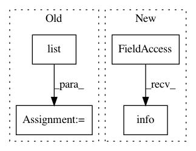

b3187df675a6e5f590376292aff521e562a942c0,anvio/drivers/sourmash.py,Sourmash,process,#Sourmash#Any#Any#,56
Before Change
self.progress.new("Sourmash")
self.progress.update("Computing fasta signatures...")
kmers = list(range(5,25,5))
kmers_str = ",".join([str(kmer) for kmer in kmers])
scale = "--scaled=%i" % self.scale
compute_command = [self.program_name, "compute",
After Change
def process(self, input_path, fasta_files):
self.run.info("[sourmash] Kmer size", self.kmer_size, nl_before=1)
self.run.info("[sourmash] Compression ratio", self.scale)
report_name = "kmer_%d_mash_similarity" % self.kmer_size
In pattern: SUPERPATTERN
Frequency: 3
Non-data size: 4
Instances
Project Name: merenlab/anvio
Commit Name: b3187df675a6e5f590376292aff521e562a942c0
Time: 2019-10-09
Author: kiefl.evan@gmail.com
File Name: anvio/drivers/sourmash.py
Class Name: Sourmash
Method Name: process
Project Name: J535D165/recordlinkage
Commit Name: 27abe9ced763bc831cd760e7ae7ee313db10b828
Time: 2017-08-24
Author: jonathandebruinhome@gmail.com
File Name: recordlinkage/base.py
Class Name: BaseCompare
Method Name: compare_vectorized
Project Name: automl/ParameterImportance
Commit Name: 985d73687ebb7d39216eb87ac779c170c86283b3
Time: 2016-12-09
Author: biedenka@informatik.uni-freiburg.de
File Name: importance/evaluator/forward_selection.py
Class Name: ForwardSelector
Method Name: plot_result